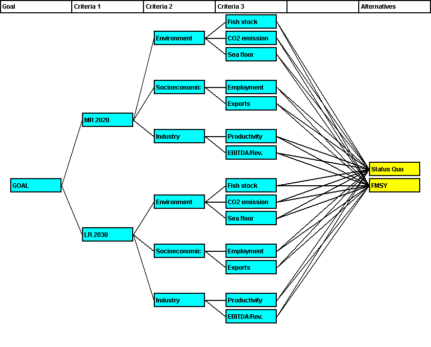
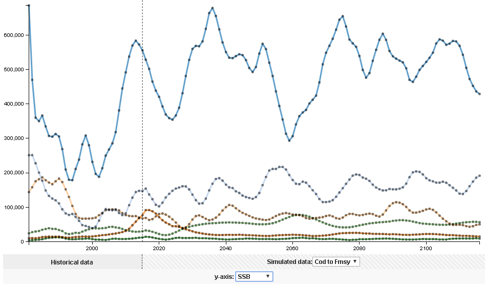

Decision Support Framework
Decision Support Framework

The MareFrame Decision Support Framework is a pragmatic planning process for moving towards an Ecosystem Approach to Fisheries Management. Click on the map of Europe to the left to see all case studies or explore the current case study below.

Case Study: Northern & Western Waters – Iceland Waters
Objective: Maintain the fish stocks in Icelandic waters at a highly sustainable level, thereby ensuring efficient exploitation, stable employment and settlement throughout Iceland.1
Management Problem
In general, there is a good consensus within the stakeholder group with both the objectives and the implementation of the Icelandic Fisheries management act. The main concerns of the stakeholder group were linked to the effects of increased taxation and apparent uncertainty which frequent regulatory changes have for the fishing industry and the Icelandic community, at both local and national level. Other issues raised by the stakeholder group include removal of the quota consolidation barriers (currently 12% of TAC), effects of municipality controlled quota, aggregation of quotas in both the small (jig and line) and large type ITQ, and whether the industry should in general take socio-economic factors into account.
Management Setting
In Iceland, almost all fisheries are subject to a management system based on the concept of individually transferable quotas (ITQs). The Ministry of Industries and Innovation (formerly the Ministry of Fisheries) is responsible for management of the Icelandic fisheries and implementation of the legislation. Each fishing year (September-August), the Ministry issues regulations for each commercial fishery, including the total allowable catch (TAC) of each stock. The TAC for each species is set on the recommendations of the Marine Research Institute (MRI) which also advices the government on other regulatory issues, such as spatial and seasonal closures, gear restrictions and where applicable days-at-sea. Additional, non-biological regulations, are set by the government without consultation with the MRI.
Main objectives and criteria
A management proposal for the case study will be evaluated in relation to a set of objectives and criteria (see the list below). These criteria were determined in co-creation with stakeholders.
| Objectives for the management plan (interest variable) | Candidate operational objectives and indicators |
|---|---|
| Increasing cod stock |
B4+ = 1,106,000 Btrigger = 220,000t Blim = 125,000t TAC = 218,000t by the end of planning period. |
| Stable haddock stock |
B3+ = 104,000 Btrigger = 45,000t Blim = 45,000t TAC = 30,400t by the end of planning period. |
| Stable saithe stock |
B4+ = 296,000 Btrigger = 65,000t TAC = 58,000t by the end of planning period. |
| Lower CO2 emissions | 10% less CO2 emission by the end of the planning period. |
| Maintain sea floor integrity | 5% less damage to the sea floor by the end of the planning period. |
| Ensure social stability |
Employment in fishing and aquaculture around 2-3% of LF throughout the planning period Export earnings nearly 50% of all operating revenues of fishing by the end of planning period. |
| Maintain strong economic performance of industry |
Increase labour productivity by 10% by the end of the planning period Mean EBITDA/Revenue level ≥ value in starting year by the end of the planning period. |
Multi-Criteria Analysis

Scenario Model output

Management Scenarios
- Business as usual: This scenario serves as baseline to other potential management scenarios. In the scenario the current status of management is maintained and the effects on the status of the ecosystem explored going forward. In terms of control variables this entails that the current fleet composition and harvest rate maintained.
- Cod to Fmsy: This scenario offers a slight modification of scenario 1 as here the harvest rate is adjusted in such a way that the yield of the cod fishery reaches its maximum while fleet composition remains fixed.
- Changes in fleet composition: The effects of specific changes in fleet composition in terms of management restrictions are explored. Currently the small scale fishery is allotted a proportion of the quota that cannot be transferred to larger fishing vessels. This scenario analyses of the effects of removing this restriction on quota transfer from the small scale fishery.
- Multi-species maximum sustainable/economic yield: The fishing rate and fleet composition is altered such that either of the following yield levels is attained:
- Maximum sustainable yield from the resource
- Maximum economic yield
- Environmental concerns: This scenario investigates the effects of adjusting the harvest rate and fleet composition is such a way that overfishing and over depletion is prevented and the effects on the environment such as CO2 emissions and damage to the sea floor is reduced.
- ^The Icelandic Fisheries Management Act. Available at: http://www.fisheries.is/management/fisheries-management/the-fisheries-management-act/.